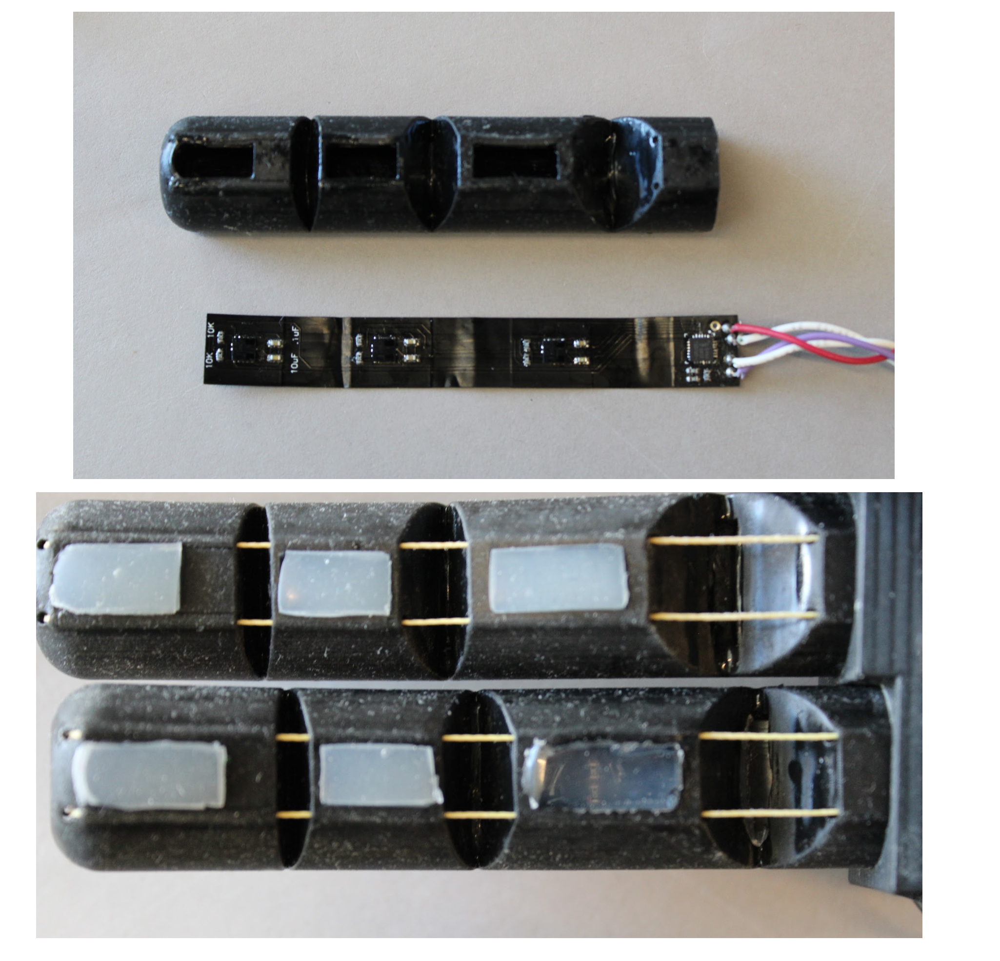

A powerful prosthetic hand with passive transmission
Organic Robotics Lab
tl;dr

Modern prosthetic hands must balance finger force, operational speed, size, and cost, presenting a difficult design challenge for engineers. Current top-of-the-line prosthetics utilize high quality motors to achieve the extreme precision, force, speed, and size needed, at a tradeoff of an extremely high cost (~$500 per motor). ADEPT is designed to be 3D printed with projection stereolithography and utilizes a unique and novel transmission to passively switch between high speed and high force mode depending on the force it experiences. This allows much cheaper motors to achieve the results needed for prosthetic hands, dramatically lowering the total cost of production ($500 compared to $12,000). Additionally, ADEPT’s compact design houses all electronics (controllers, battery, motors, sensors) within the body of the fingers and palm and even includes sensors on fingers for distance of an object and force on that finger.
Here's the technical stuff!
Elastomeric Passive Transmission
What the heck does that mean? Let’s break it down!
A transmission on a bike switches between gears by adjusting the ratios of the gears. A smaller gear gets more power to go up hills and a larger gear gets more speed when you want to go fast. An automatic transmission does this without user operation, so rather than having to manually change your gear, it is responsive to the environment around it. A passive transmission goes one step further to eliminate this layer of sensing and simplifies the entire action down to mechanical properties of the material of the transmission, which happens to be elastomeric! So that’s a brief summary of an Elastomeric Passive Transmission (EPT)
Design and Manufacturing

The EPT is manufactured with a SLA printer (Carbon 3D’s EPU and RPU) and consists of two parts as seen to the right in B and C. The first is a rigid core that has a hole for the motor shaft and defines the smallest “gear” with the diameter of the core. This piece is then caged in elastic struts which are flexible and can bend. The top and bottoms of each piece are bonded together to assemble a complete EPT as seen in D.
In section A, you can see a good demonstration of the EPT in action. If there is low force on the tendon wrapped around the EPT, the radius has a high spooling radius, operating at high speed. When the tendon is subjected to higher force, the EPT shrinks, moving into high force mode. A closer look at this mechanism is shown in E.
So what’s the actual mechanical difference in these two different modes?

To test the mechanical advantage, we compared the EPT to its static, rigid, counter parts.
In A, the top row shows the contraction of the high speed mode, which reaches full contraction within 450 ms. Meanwhile, the rigid spool is just about a third of the way through the bending process, highlighting the speed.
In B, a force sensor was used to measure the force at the fingertip. The EPT is able to output 32.3 N, almost tripling that of the rigid spool.
These trade-offs in rigid spools speed and power are shown in C. In choosing a spool size, a balance of speed or power usually must be chosen, but with the EPT combining both parameters into a small package, this could revolutionize many mechanical systems.
Smarter... Fingers?
The fingers of ADEPT are modular, meaning that they can be hot swapped for fingers of different sizes and functions. These were SLA printed in flexible EPU, giving a flimsy, hollow structure.
Within this hollow space, silicon molding material was used to fill in some “meat” in the fingers, giving it some rigidity. Embedded within this silicon is a flexible PCB with sensors on it for detecting force on the finger pads and time of flight of objects near the finger. The silicon material was a perfect pairing for these functions as it helped distribute weight and provide retention for the force sensor and allowed the time of flight sensor IR light to pass through
Furthermore, a light guide was embedded into the backs of the fingers, which served two very important functions. First, it provided antagonistic force to pull the finger back into an unflexed position. Second, IR light is shined through one side and read at the other to detect the flexion of the finger. As the finger bends, more and more light is diffracted out, letting us know that the finger is bent. This is especially important because the hand has no other way of knowing its current positions. The motors are not encoded and even if they were, the dynamic radius of the transmission would make it extremely hard to translate rotation of a motor to flexion of the finger. This light guide system was a novel development used to solve this unique problem in soft robotics.
Using these sensors, we were able to let the hand work autonomously, able to catch an object thrown at it, make hand signs, and respond to outside stimuli.
Footprint (or hand print?)

The ADEPT hand is composed almost entirely from 3D-printed components. The tendons are each driven by inexpensive geared DC motors (~$15; 298:1 Micro Metal Gearmotor HP 6V, Pololu Corporation) with the exception of the thumb, which is driven by two motors—one for each of its two active degrees of freedom. The motors are powered by a 2-cell (7.4 Volts), 500 mAh Lithium Polymer battery which also resides in the palm of the hand. Although the motors are classified as 6-Volt motors it is common practice to drive 6-Volt motors as high as 9 Volts for prosthetic applications. The palm of the hand consists of an inner plate and an outer casing (both printed with RPU). The inner plate secures the six motors and associated electronics while the outer casing has an LPU skin on the palm to increase its softness and friction for grasping. With the 2- cell battery, the hand has a mass of 399 g —less than the mass of the average human hand (~400 g). Using these 3D printed parts and much simpler motors, the cost of materials was able to be driven down to less than $500.
- Product
- Publication
- Electronics